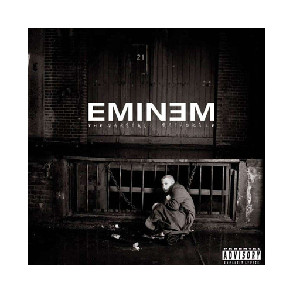

Building off the success of his first album The Slim Shady LP, Eminem came back harder and with even more targets. While his first album
depicted multiple acts of violence, the anger on his sophomore effort now had specific targets, namely his critics, wife, and mother. This
album is the first that really started to blur the line between Eminem, Slim Shady, and Marshall Mathers. onsidered by many as his magnum opus,
The Marshall Mathers LP also set the one week sales record for a solo artist’s album. It went on to become diamond, and is considered by many as
one of the finest records of the 21st century, if not all time.
